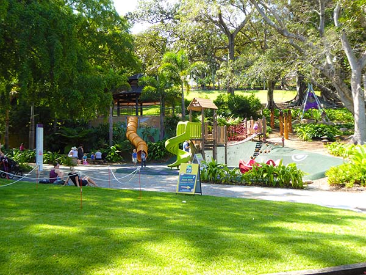

This Page Shows Individual Results

Nestled just a 10-minute walk from Brisbane’s CBD lies the Roma Street Parkland and Spring Hill precinct. A haven for the a la mode, Spring Hill features an assortment of trendy cafes and restaurants, interwoven with historical monuments such as the heritage-listed Old Windmill and the Spring Hill Baths.
Meanwhile Roma Street Parkland offers a distinctly different experience, with designer gardens and sprawling lawns that wind around 16 hectares of stunning parklands. Well known by garden and plant enthusiasts for its exceptional horticultural standards, it is also a popular visitor destination, housing free barbeques, playgrounds and a year-round calendar of events.
Roma Street Parkland
Description:
Nestled just a 10-minute walk from Brisbane’s CBD lies the Roma Street Parkland and Spring Hill precinct. A haven for the a la mode, Spring Hill features an assortment of trendy cafes and restaurants, interwoven with historical monuments such as the heritage-listed Old Windmill and the Spring Hill Baths.
Meanwhile Roma Street Parkland offers a distinctly different experience, with designer gardens and sprawling lawns that wind around 16 hectares of stunning parklands. Well known by garden and plant enthusiasts for its exceptional horticultural standards, it is also a popular visitor destination, housing free barbeques, playgrounds and a year-round calendar of events.
Rating:
Co-ordinates:
-27.461694, 153.017868
Reviews:
1. Very good place to visit, nice and quiet and a great place to go with the kids.
2. Absolutely loved the park, great atmosphere. Needs maintenance more often but still a great park.
3. A nice place to jog and have some slides for kids.
Add a review:
Log out